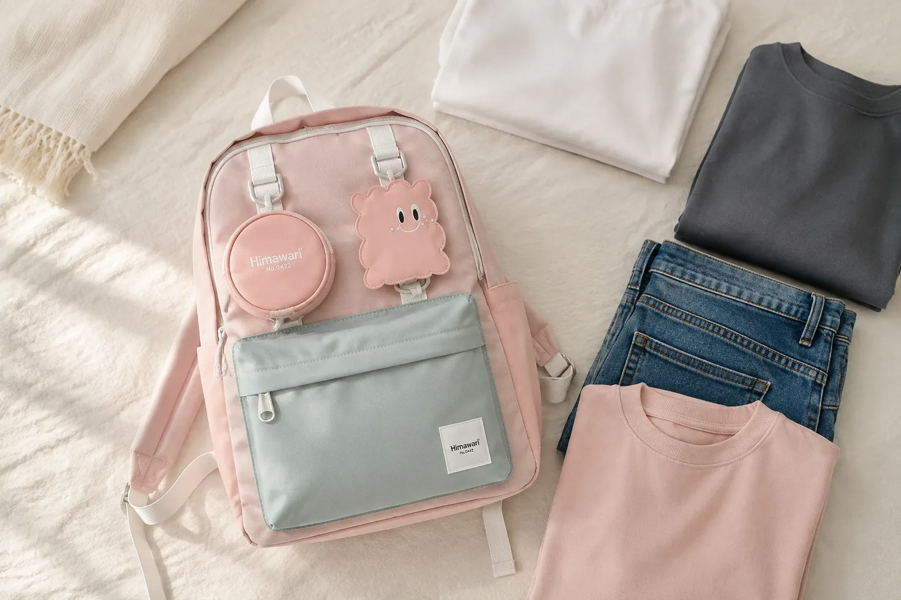
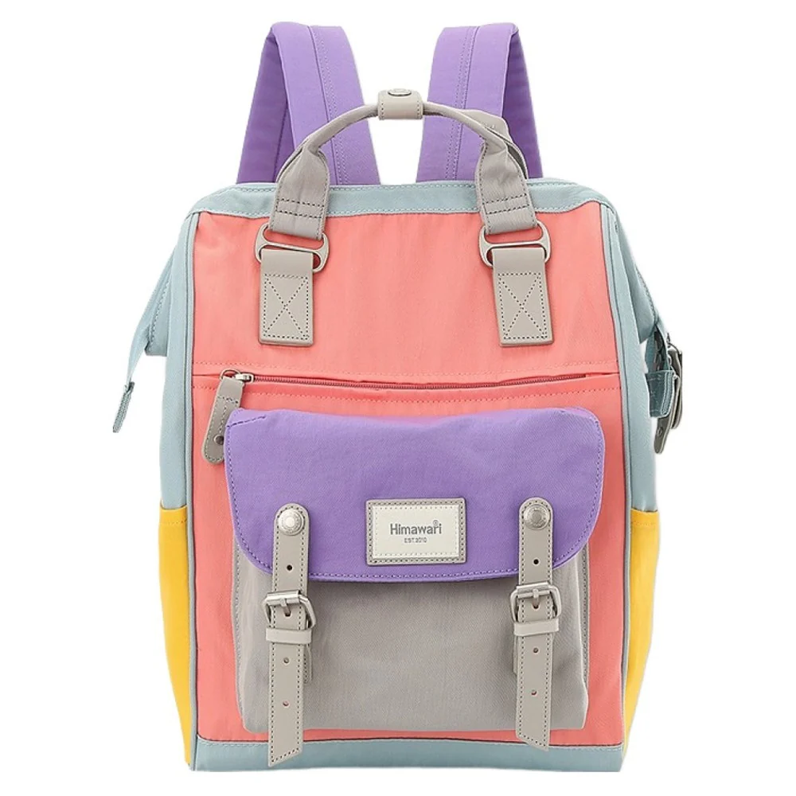

백팩 색을 고를 때 옷장에 남길 질문

백팩 색을 고를 때 사진에서 마음에 든 색과 매일 메고 싶은 색이 바로 같지는 않을 수 있습니다. 한 벌의 옷과 잘 어울리는 조합을 찾았어도 계절마다 다른 겉옷을 입습니다. 색상 선택을 오래 고민한다면 후보를 더 늘리기보다 자주 쓰는 옷과 장소를 먼저 꺼내볼 만합니다. 어떤 색이 무조건 기본이라는 정답보다 자신의 반복되는 옷차림에서 무엇을 남기고 무엇을 바꾸고 싶은지가 판단 기준이 됩니다.
옷장의 모든 옷을 펼칠 필요는 없습니다. 최근 자주 입은 겉옷과 상의, 하의 가운데 실제로 함께 입는 조합 몇 가지를 고릅니다. 색상 이름을 적는 것에 더해 밝고 어두운 면이 어디에 있는지 볼 수 있습니다. 검은 겉옷과 밝은 셔츠를 자주 입는다면 가방까지 어둡게 이어갈지 다른 색을 넣을지 생각해보세요. 같은 색상 후보도 옷 전체와 봤을 때 어느 면을 바꾸는지에 따라 느낌이 달라질 수 있습니다.
한 벌보다 반복해서 입는 조합
후보 사진을 옷 옆에 놓고 볼 때는 가방 한 장만 크게 확대하지 않고 전체 조합을 봅니다. 실제로 입는 겉옷의 비중이 크다면 셔츠보다 그 옷과의 연결을 먼저 살필 수 있습니다. 여름에는 가벼운 옷에 메고 겨울에는 두꺼운 겉옷에 쓸 계획이라면 두 계절의 대표 조합을 함께 놓습니다. 한 장면에서만 마음에 드는지 여러 장면에서도 계속 들고 싶은지 구분하면 후보를 줄일 이유가 구체적으로 생깁니다.
색을 옷과 가깝게 이어갈지 대비를 만들지도 개인 취향에 따라 다릅니다. 비슷한 밝기의 옷과 가방을 고르면 전체에서 가방이 어느 정도 드러나는지 볼 수 있고, 다른 색을 고르면 그 면이 얼마나 눈에 들어오는지 판단할 수 있습니다. 어떤 조합을 단정하거나 캐주얼하다고 모두에게 정할 필요는 없습니다. 원하는 인상이 무엇인지 자신의 옷차림과 연결해보면 익숙한 색을 고를 이유와 새 색을 시도할 이유가 각각 분명해집니다.
제품의 본체색만 보는 대신 실제 구매할 옵션의 전체 이미지를 확인합니다. 배색과 손잡이, 여밈 주변이 어떤 색인지 사진에서 읽어볼 수 있습니다. 이때 다른 옵션의 사진을 같은 상품의 색상이라고 혼동하지 않도록 모델과 옵션 표기를 함께 봅니다. 세부 면을 직접 확인하지 않았다면 제품 이름에서 디자인을 짐작하지 않습니다. 마음에 든 색이 실제로 선택 가능한 옵션인지도 주문 전에 현재 안내를 확인할 정보입니다.
이번 색상 비교의 실제 제품 예시로 Himawari No.9018 제품 정보를 살펴볼 수 있습니다. 원하는 옵션을 고른 뒤 자주 입는 겉옷의 사진과 나란히 놓는 방식입니다. 제품의 색상명만 적어 비교하기보다 그 옵션의 전체 사진과 세부 이미지를 함께 보면 어느 면이 자신의 옷과 만나는지 질문을 만들 수 있습니다. 후보를 고르는 과정에서는 제품 하나의 인상을 평가하는 것과 그 제품을 자신의 옷장에 더하는 일을 같이 생각합니다.

사용하는 장소와 관리 습관
같은 가방을 사무실과 학교, 주말 외출에 계속 쓴다면 가장 오래 사용하는 장면부터 봅니다. 어느 장소의 복장 안내가 있다면 그 조건을 확인하고, 정해진 안내가 없다면 실제로 입는 옷과 개인 취향을 기준으로 고를 수 있습니다. 가방의 색만으로 장소와 어울린다고 결정하기보다 크기와 장식, 실제 짐을 담은 모습도 함께 판단하면 됩니다. 색이 마음에 들어도 매번 다른 가방으로 바꾸게 될 상황인지 생각해볼 만합니다.
관리 습관도 후보를 좁히는 질문이 됩니다. 가방을 바닥에 자주 두는지, 젖은 물건과 함께 쓰는지, 사용 뒤 표면을 살피는 시간이 있는지 떠올립니다. 어느 색이 모든 흔적을 감춰주거나 항상 관리하기 쉬울 것이라고 정하지 않습니다. 실제 소재와 관리 안내를 보고 자신이 받아들일 수 있는 사용 흔적의 범위를 생각하면 됩니다. 새 제품의 깔끔한 사진과 시간이 지난 뒤 계속 사용할 물건이라는 생각을 같이 두는 과정입니다.
평소 같은 겉옷을 자주 입는 사람과 옷의 색을 자주 바꾸는 사람은 후보를 남기는 기준도 다를 수 있습니다. 전자는 반복되는 조합이 마음에 드는지를 우선 볼 수 있고, 후자는 여러 조합에서 부담 없이 메고 싶은지를 비교할 수 있습니다. 색을 고를 때 옷장 전체를 가방에 맞춰 바꾸겠다는 계획보다 지금 있는 옷에서 실제 사용할 빈도를 생각하면 됩니다. 특별한 날 한 번의 조합과 매일의 조합이 모두 필요하다면 사용 비중을 따로 정해볼 수 있습니다.
화면에서 결정하기 어려운 부분
온라인 이미지를 볼 때는 서로 다른 촬영 조건의 사진이 있는지 확인합니다. 화면의 밝기와 색 설정에 따라 보이는 결과가 달라질 수 있으므로 사진 한 장의 색을 실물과 똑같다고 생각하지 않습니다. 제품 설명의 색상명과 여러 이미지를 함께 대조하고, 차이가 크게 느껴지는 면은 판매자에게 문의할 수 있습니다. 실물 확인이 가능한 경우에는 실제로 볼 수 있는 조건에서 판단하고 구매 과정의 확인 방법도 현재 안내를 읽어둡니다.
후보가 둘 남았다면 같은 조건의 옷 사진에 각각 놓고 비교할 수 있습니다. 하나는 평소 조합과 가깝고 다른 하나는 새 색을 더하는 선택이라면 어느 쪽을 더 자주 메고 싶은지 생각해보세요. 사용 장면을 더 구체적으로 적어도 됩니다. 출근 때 늘 입는 겉옷과 주말에 가장 자주 입는 옷에 놓아보고 둘 중 어떤 조합을 남길지 판단합니다. 비교가 끝난 뒤에도 결정이 어렵다면 확인되지 않은 색감이 무엇인지 질문으로 남길 수 있습니다.
색을 고른 뒤에는 그 선택을 모든 옷과 맞아야 하는 기준으로 만들 필요가 없습니다. 일주일 동안 자주 입는 조합에서 계속 쓸 수 있다면 다른 날은 가방을 바꾸는 선택도 가능합니다. 반대로 하나로 계속 쓸 계획이라면 후보를 고를 때 여러 계절의 옷을 함께 보아둔 이유가 남습니다. 구매 전 기록에는 색상 이름뿐 아니라 마음에 들었던 옷 조합을 남길 수 있습니다. 나중에 사진을 다시 볼 때도 무엇과 함께 사용할 생각으로 골랐는지 알아보기 쉽습니다.